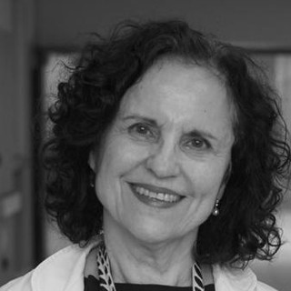
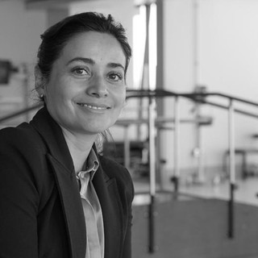
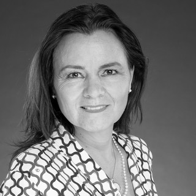

COMITÉ CIENTÍFICO
Comité Científico

Dra. Marcela Zubieta
Presidenta y Fundadora de Fundación Nuestros Hijos

Dra. Orietta Candia
Gerente Técnico de Fundación Nuestros Hijos

Dra. Julia Palma
Médico Consultor, Programa Regional América del Sur — St. Jude Children's Research Hospital

Dra. Milena Villarroel
Presidenta SLAOP · Académica, Facultad de Medicina, Universidad de Chile

EU. Amaya Muñoz
Coordinadora de Extensión y Vinculación con el Medio de Fundación Nuestros Hijos